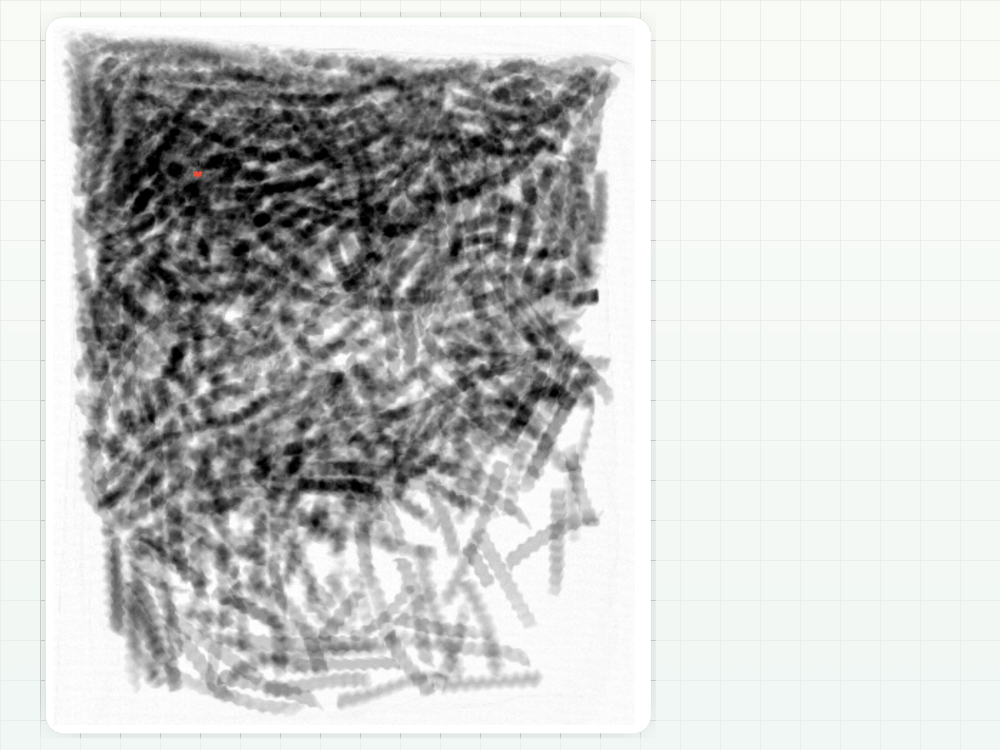
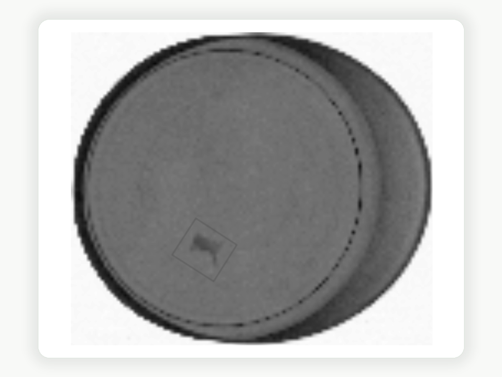
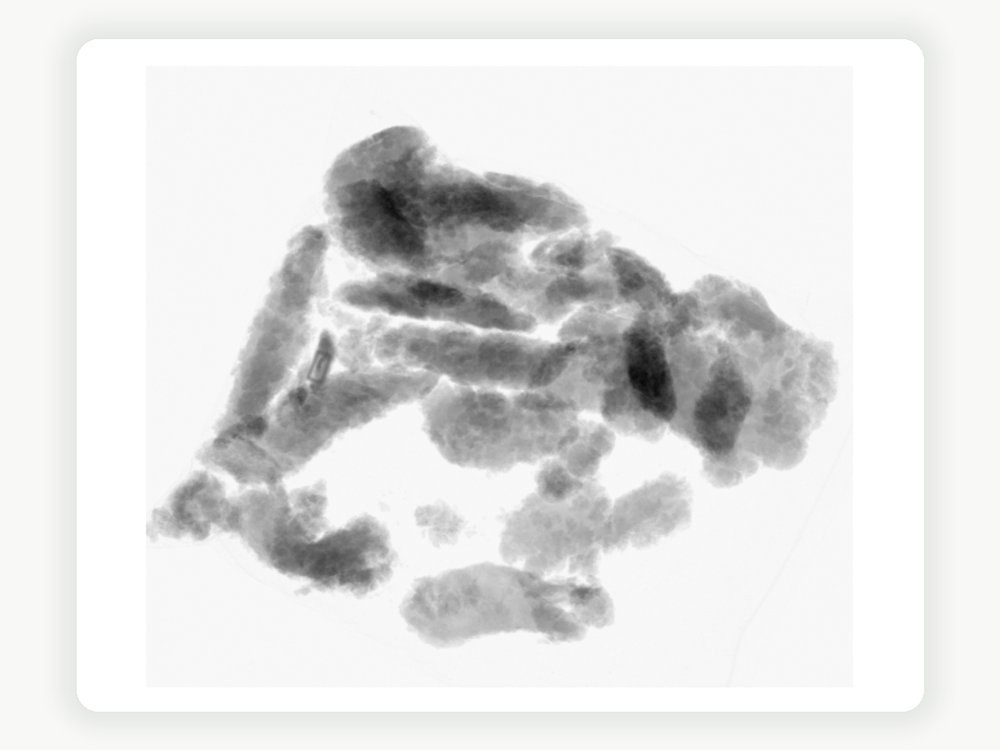

Metal fragment in a finished product
A compact dense object can be reviewed directly in the X-ray evidence, even when the fragment is difficult to see at card size.
Capability
High-resolution x-ray inspection helps food producers detect metal, bone, glass, stones, and some dense plastics while preserving image evidence for review.
What teams need
Food safety teams need to confirm what the machine saw, how the event was classified, and whether the product and package create blind spots. GreyscaleAI combines inspection images, AI review, and event history so decisions can move faster.

Detection matrix

This matrix is directional, not a blanket guarantee. Validation should always be done with your actual product, package, contaminant set, and line conditions.
Often among the easiest contaminants to detect when product density is moderate.
Detection varies widely with product thickness, natural density, and bone composition.
Usually strong candidates where the product does not mask the contaminant.
Some dense plastics can be detected, but contrast is usually lower than metal or glass.
Example X-ray views

A compact dense object can be reviewed directly in the X-ray evidence, even when the fragment is difficult to see at card size.

A small bone fragment can be reviewed directly in the X-ray evidence, even when it is difficult to see at card size.

A small bone can be reviewed directly in the X-ray evidence, even when it is difficult to see at card size.
RELATED PROOF
An anonymized protein application showing how AI models helped distinguish true bone from normal poultry variation.
Read case studyA high-speed seafood and packaged-goods application where dent events were separated from foreign material events in Insights.
Read case studyRELATED WORKFLOW
GreyscaleAI helps teams move from a reject event to the supporting image, machine context, inspection history, and broader review path needed for action.
Share the product, package, target contaminants, and line speed so GreyscaleAI can talk through validation under real operating conditions.